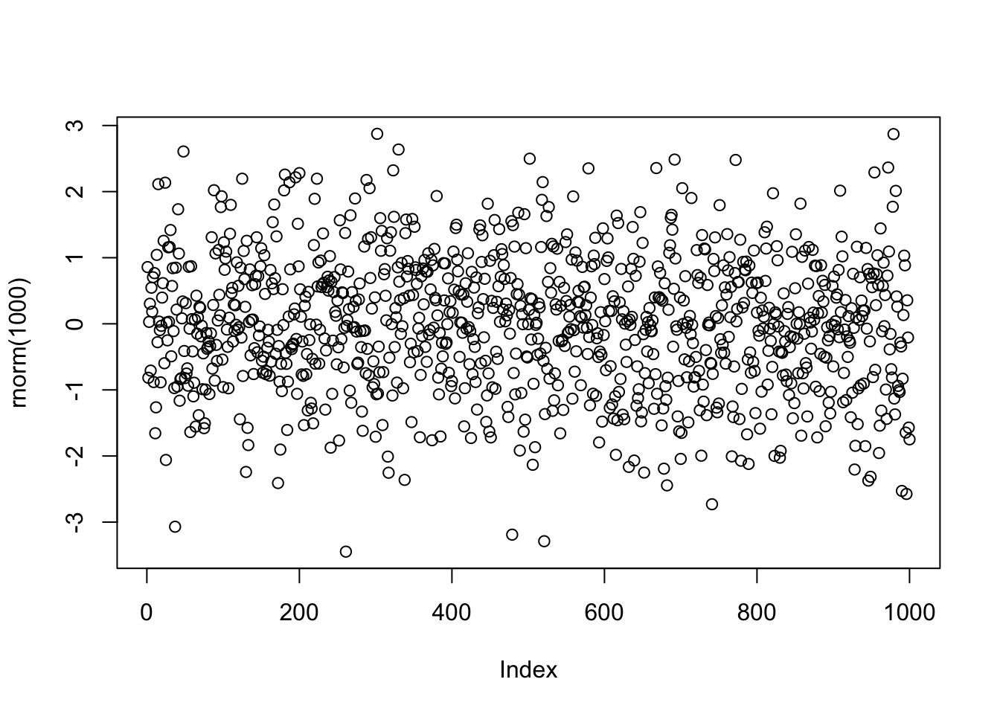
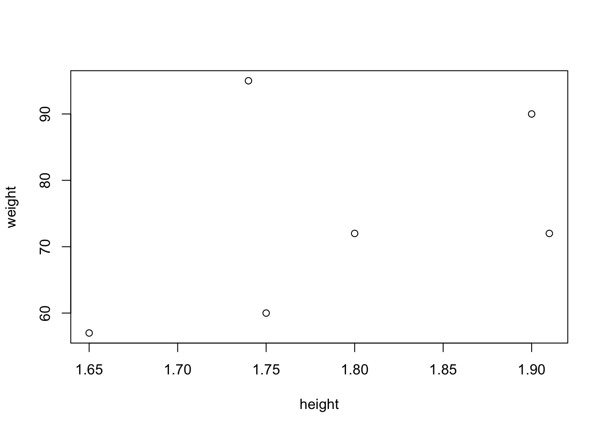
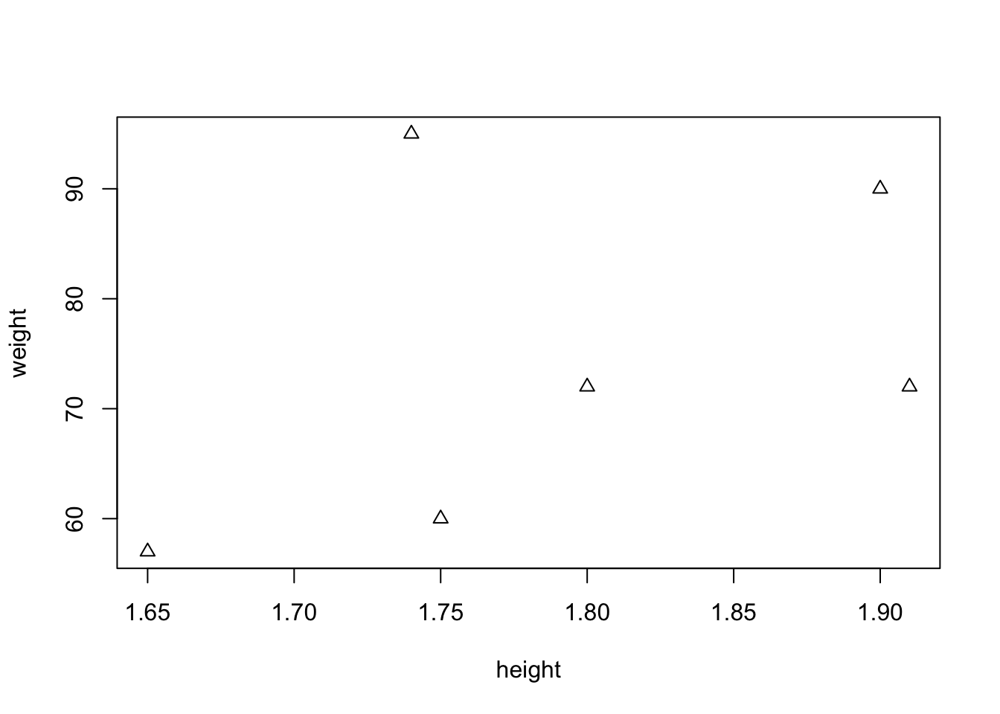
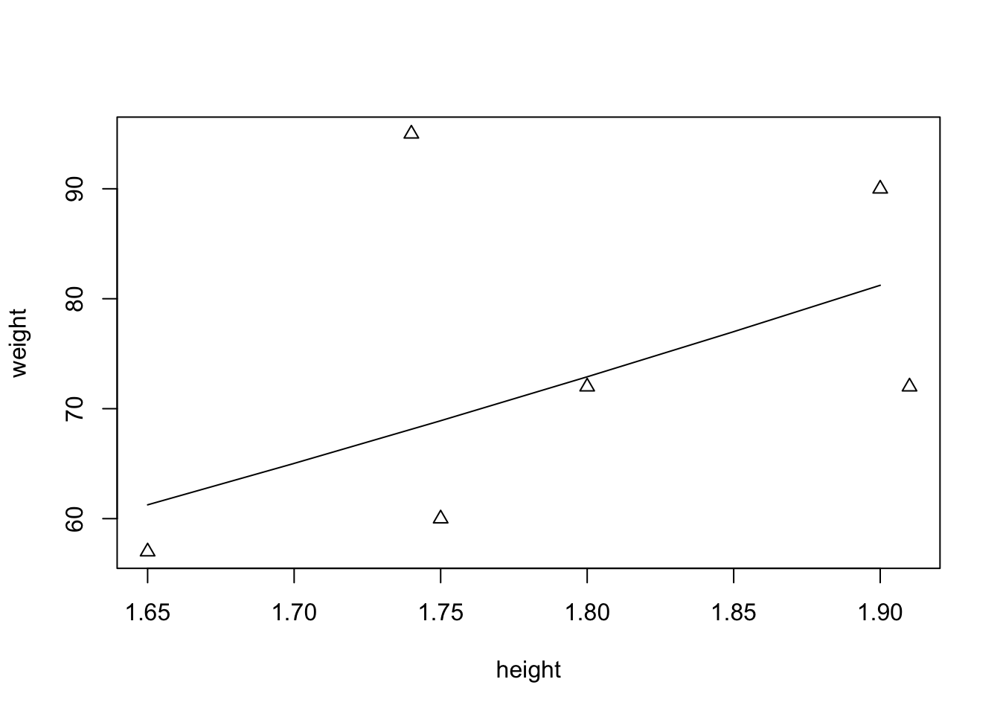
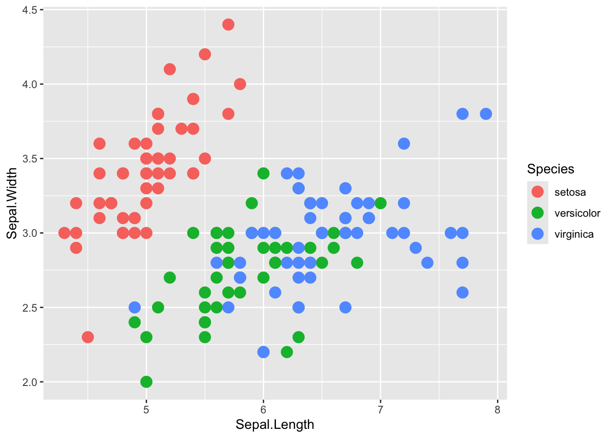
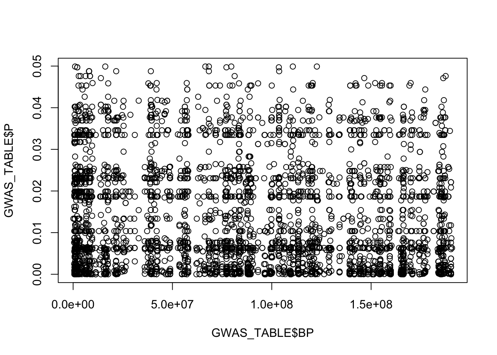
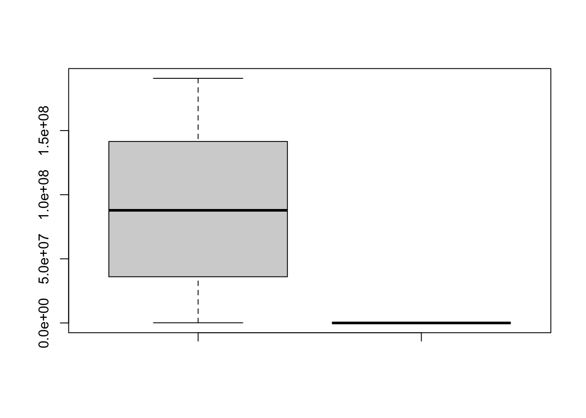

2 Basics of R
2.1 Basic Steps
R can be accessed by clicking an icon or entering the command “R” at the system command line, also refered to as Terminal
This produces a console window or causes R to start up as an interactive program at the current terminal window
R works fundamentally by a question-and-answer model: enter a line with a command and press Enter
Then the program does something relevant
In this course, we will use RStudio and a file format called R Markdown, which allows us to code using not only R, but bash and Python, two other languages we may refer to as the course progresses
2.2 Library ISwR
This notebook used the book Introductory Statistics with R, by Peter Dalgaard as a reference
For the book, R library ISwR (Introductory Statistics with R) can be freely downloaded
All examples in the book used as reference should run provided that ISwR library is not only installed by also loaded into the current search path
Library can be installed and loaded by typing the following command into an R chunk
install.packages("ISwR")
library("ISwR")2.3 Plot Random Numbers
For a first impression of what R can do, let´s try plotting a graph
Need to insert the R chunk and use the plot function

2.4 A Potent Calculator
- R can process simple and complex arithmetic expression and produce a result for the user
2 + 2## [1] 4- R can also be used to do other standard calculations. Here is how to calculate e to the power of -2
exp(-2)## [1] 0.1353353Other than the R chunks, these calculations can be made using the RStudio Console
In RStusio, when using the R Markdown format (.Rmd), we can insert R, Bash (terminal) and Python chunks
Proceed to illustrate that in the RStudio IDE
2.5 Assignments
Assignments are made based on the necessity to store the results of calculations and use these results in downstream processing steps in an entire algorithm or pipeline
Like other languages, R has symbolic variables: names that can be used to represent values
To assign the value 2 to variable x, we can enter the following command
x <- 2The character <- is called the assignment operator
There is no immediate visible result, but from now on, x has the value 2 and can be used in subsequent arithmetic operations
We can “ask” R which value is stores in the x variable
x## [1] 22.6 Operations after assignment of variable
- Below, our variable x, is used to perform other calculations
x## [1] 2- Addition
x + x## [1] 4- Multiplication
5*x## [1] 10- Potentiation
x^3 ## [1] 82.7 Vectorized Arithmetic
It is not useful to use one number at a time to run statistics
One strenght of R is that it can handle entire data vectors as single objects
A data vector is an array of numbers and a vector variable can be constructed like this
weight <- c(60, 72, 57, 90, 95, 72)
## To look at the vector variable, just type its name again
weight## [1] 60 72 57 90 95 72You can do calculations with vectors just like ordinary numbers, so long as they have the same length
One exception to this rule that we will see will be when we use the mean of weigths of persons (represented by xbar)
In that case, the mean will be one single number, which will be subtracted from each sample value
Suppose the weight vector indicates the weight of men in kilograms
One simple formula to indicate whether a person is obese or not, is the body mass index (BMI)
BMI is calculated by dividing the person´s weight by the square of their height, in meters
Therefore, in R, we need to have a vector with the height values to calculate the bmi vector, containing the body-mass index for the individuals indicated in the weight vector
height <- c(1.75, 1.80, 1.65, 1.90, 1.74, 1.91)
bmi <- weight/height^2
bmi## [1] 19.59184 22.22222 20.93664 24.93075 31.37799 19.736302.8 Calculate the Mean of the variable weight
- The mean is calculated by the sum of the observations divided by the total number of observations
\(\overline{x}\) = \(\sum x_i\) /n
- Let´s calculate the mean of the variable weight
sum(weight)## [1] 446## [1] 74.333332.9 Calculate the Standard-Deviation of the variable weight
- Standard-deviation can be calculated with the following equation
\[ SD = \sqrt{(\sum (x_i - \overline{x})^2)/(n-1)}\]
- xbar, the mean of variable weight, can be calculated using the sum and length of variable weight
## [1] 74.33333- Now we can calculate the difference of each replicate in the weight variable and the mean of the weight variable, one by one
weight - xbar## [1] -14.333333 -2.333333 -17.333333 15.666667 20.666667 -2.333333Notice how R uses xbar, which has length one, to calculate the new weight - xbar data vector
xbar is recycled and subracted from every element in the weight variable (weight data vector)
2.10 Calculation of the Standard Deviation
- Calculate the squared deviations
(weight - xbar)^2## [1] 205.444444 5.444444 300.444444 245.444444 427.111111 5.444444- Calculate the sum of squared deviations
sum((weight - xbar)^2)## [1] 1189.333Calculate the standard deviation
## [1] 15.422932.11 Standard Statistical Procedures
It is a standard medical practice to access whether a person is obese or not using validated scientific criteria
As a simple procedure to show this concept, let’s assume that an individual with a normal weight should have a BMI in the range 20-25
We want to know if our data deviates from the normal range of BMI
In R, this can be done using a statistical test called t-test
You do not need to understand what a t-test is, just remember that is is used to evaluate the distribution of sample values compared to the normal distribution
You can use a one-sample t-test to assess whether the six persons’ BMI can be assumed to have mean 22.5 given that they come from a normal distribution
You can do that using the function t.test
2.12 Standard Statistical Procedures: t-test
t.test(
bmi,
mu = 22.5
)##
## One Sample t-test
##
## data: bmi
## t = 0.34488, df = 5, p-value = 0.7442
## alternative hypothesis: true mean is not equal to 22.5
## 95 percent confidence interval:
## 18.41734 27.84791
## sample estimates:
## mean of x
## 23.132622.13 Plot Graphics
- Let’s now plot a scatterplot of the height and weight of individuals
plot(height, weight)
2.14 Plot Graphics Modifying the plotting character
You will frequently want to modify drawing of your graphs in various ways
One way is usig the parameter “plotting character”, pch
plot(height, weight, pch =2)
2.15 Plot an expected Line for weights at BMI of 22.5
- The term for weight at BMI of 22.5 is:
22.5*(height)^2This term can be used to compute the line of expected weights at a BMI of 22.5 using the lines() function
As a note, we can’t use the lines() function without first creating a plot in R.

2.16 Vectors
The weight and height vectors are called numeric vectors
Besides numeric vectors, there are numeric and character vectors
2.17 Using other libraries
2.17.1 The iris data-frame
Now we have a better understanding of what R can give us, let us use another library more commonly used datasets
At times, it is possible that you will need to figure out different ways to install a library to use it
library(datasets)- In the next chunk, we access the iris data, and look at a summary of the dataset
## Sepal.Length Sepal.Width Petal.Length Petal.Width
## Min. :4.300 Min. :2.000 Min. :1.000 Min. :0.100
## 1st Qu.:5.100 1st Qu.:2.800 1st Qu.:1.600 1st Qu.:0.300
## Median :5.800 Median :3.000 Median :4.350 Median :1.300
## Mean :5.843 Mean :3.057 Mean :3.758 Mean :1.199
## 3rd Qu.:6.400 3rd Qu.:3.300 3rd Qu.:5.100 3rd Qu.:1.800
## Max. :7.900 Max. :4.400 Max. :6.900 Max. :2.500
## Species
## setosa :50
## versicolor:50
## virginica :50
##
##
## - Another form to look at the iris data-frame is typing its name
iris## Sepal.Length Sepal.Width Petal.Length Petal.Width Species
## 1 5.1 3.5 1.4 0.2 setosa
## 2 4.9 3.0 1.4 0.2 setosa
## 3 4.7 3.2 1.3 0.2 setosa
## 4 4.6 3.1 1.5 0.2 setosa
## 5 5.0 3.6 1.4 0.2 setosa
## 6 5.4 3.9 1.7 0.4 setosa
## 7 4.6 3.4 1.4 0.3 setosa
## 8 5.0 3.4 1.5 0.2 setosa
## 9 4.4 2.9 1.4 0.2 setosa
## 10 4.9 3.1 1.5 0.1 setosa
## 11 5.4 3.7 1.5 0.2 setosa
## 12 4.8 3.4 1.6 0.2 setosa
## 13 4.8 3.0 1.4 0.1 setosa
## 14 4.3 3.0 1.1 0.1 setosa
## 15 5.8 4.0 1.2 0.2 setosa
## 16 5.7 4.4 1.5 0.4 setosa
## 17 5.4 3.9 1.3 0.4 setosa
## 18 5.1 3.5 1.4 0.3 setosa
## 19 5.7 3.8 1.7 0.3 setosa
## 20 5.1 3.8 1.5 0.3 setosa
## 21 5.4 3.4 1.7 0.2 setosa
## 22 5.1 3.7 1.5 0.4 setosa
## 23 4.6 3.6 1.0 0.2 setosa
## 24 5.1 3.3 1.7 0.5 setosa
## 25 4.8 3.4 1.9 0.2 setosa
## 26 5.0 3.0 1.6 0.2 setosa
## 27 5.0 3.4 1.6 0.4 setosa
## 28 5.2 3.5 1.5 0.2 setosa
## 29 5.2 3.4 1.4 0.2 setosa
## 30 4.7 3.2 1.6 0.2 setosa
## 31 4.8 3.1 1.6 0.2 setosa
## 32 5.4 3.4 1.5 0.4 setosa
## 33 5.2 4.1 1.5 0.1 setosa
## 34 5.5 4.2 1.4 0.2 setosa
## 35 4.9 3.1 1.5 0.2 setosa
## 36 5.0 3.2 1.2 0.2 setosa
## 37 5.5 3.5 1.3 0.2 setosa
## 38 4.9 3.6 1.4 0.1 setosa
## 39 4.4 3.0 1.3 0.2 setosa
## 40 5.1 3.4 1.5 0.2 setosa
## 41 5.0 3.5 1.3 0.3 setosa
## 42 4.5 2.3 1.3 0.3 setosa
## 43 4.4 3.2 1.3 0.2 setosa
## 44 5.0 3.5 1.6 0.6 setosa
## 45 5.1 3.8 1.9 0.4 setosa
## 46 4.8 3.0 1.4 0.3 setosa
## 47 5.1 3.8 1.6 0.2 setosa
## 48 4.6 3.2 1.4 0.2 setosa
## 49 5.3 3.7 1.5 0.2 setosa
## 50 5.0 3.3 1.4 0.2 setosa
## 51 7.0 3.2 4.7 1.4 versicolor
## 52 6.4 3.2 4.5 1.5 versicolor
## 53 6.9 3.1 4.9 1.5 versicolor
## 54 5.5 2.3 4.0 1.3 versicolor
## 55 6.5 2.8 4.6 1.5 versicolor
## 56 5.7 2.8 4.5 1.3 versicolor
## 57 6.3 3.3 4.7 1.6 versicolor
## 58 4.9 2.4 3.3 1.0 versicolor
## 59 6.6 2.9 4.6 1.3 versicolor
## 60 5.2 2.7 3.9 1.4 versicolor
## 61 5.0 2.0 3.5 1.0 versicolor
## 62 5.9 3.0 4.2 1.5 versicolor
## 63 6.0 2.2 4.0 1.0 versicolor
## 64 6.1 2.9 4.7 1.4 versicolor
## 65 5.6 2.9 3.6 1.3 versicolor
## 66 6.7 3.1 4.4 1.4 versicolor
## 67 5.6 3.0 4.5 1.5 versicolor
## 68 5.8 2.7 4.1 1.0 versicolor
## 69 6.2 2.2 4.5 1.5 versicolor
## 70 5.6 2.5 3.9 1.1 versicolor
## 71 5.9 3.2 4.8 1.8 versicolor
## 72 6.1 2.8 4.0 1.3 versicolor
## 73 6.3 2.5 4.9 1.5 versicolor
## 74 6.1 2.8 4.7 1.2 versicolor
## 75 6.4 2.9 4.3 1.3 versicolor
## 76 6.6 3.0 4.4 1.4 versicolor
## 77 6.8 2.8 4.8 1.4 versicolor
## 78 6.7 3.0 5.0 1.7 versicolor
## 79 6.0 2.9 4.5 1.5 versicolor
## 80 5.7 2.6 3.5 1.0 versicolor
## 81 5.5 2.4 3.8 1.1 versicolor
## 82 5.5 2.4 3.7 1.0 versicolor
## 83 5.8 2.7 3.9 1.2 versicolor
## 84 6.0 2.7 5.1 1.6 versicolor
## 85 5.4 3.0 4.5 1.5 versicolor
## 86 6.0 3.4 4.5 1.6 versicolor
## 87 6.7 3.1 4.7 1.5 versicolor
## 88 6.3 2.3 4.4 1.3 versicolor
## 89 5.6 3.0 4.1 1.3 versicolor
## 90 5.5 2.5 4.0 1.3 versicolor
## 91 5.5 2.6 4.4 1.2 versicolor
## 92 6.1 3.0 4.6 1.4 versicolor
## 93 5.8 2.6 4.0 1.2 versicolor
## 94 5.0 2.3 3.3 1.0 versicolor
## 95 5.6 2.7 4.2 1.3 versicolor
## 96 5.7 3.0 4.2 1.2 versicolor
## 97 5.7 2.9 4.2 1.3 versicolor
## 98 6.2 2.9 4.3 1.3 versicolor
## 99 5.1 2.5 3.0 1.1 versicolor
## 100 5.7 2.8 4.1 1.3 versicolor
## 101 6.3 3.3 6.0 2.5 virginica
## 102 5.8 2.7 5.1 1.9 virginica
## 103 7.1 3.0 5.9 2.1 virginica
## 104 6.3 2.9 5.6 1.8 virginica
## 105 6.5 3.0 5.8 2.2 virginica
## 106 7.6 3.0 6.6 2.1 virginica
## 107 4.9 2.5 4.5 1.7 virginica
## 108 7.3 2.9 6.3 1.8 virginica
## 109 6.7 2.5 5.8 1.8 virginica
## 110 7.2 3.6 6.1 2.5 virginica
## 111 6.5 3.2 5.1 2.0 virginica
## 112 6.4 2.7 5.3 1.9 virginica
## 113 6.8 3.0 5.5 2.1 virginica
## 114 5.7 2.5 5.0 2.0 virginica
## 115 5.8 2.8 5.1 2.4 virginica
## 116 6.4 3.2 5.3 2.3 virginica
## 117 6.5 3.0 5.5 1.8 virginica
## 118 7.7 3.8 6.7 2.2 virginica
## 119 7.7 2.6 6.9 2.3 virginica
## 120 6.0 2.2 5.0 1.5 virginica
## 121 6.9 3.2 5.7 2.3 virginica
## 122 5.6 2.8 4.9 2.0 virginica
## 123 7.7 2.8 6.7 2.0 virginica
## 124 6.3 2.7 4.9 1.8 virginica
## 125 6.7 3.3 5.7 2.1 virginica
## 126 7.2 3.2 6.0 1.8 virginica
## 127 6.2 2.8 4.8 1.8 virginica
## 128 6.1 3.0 4.9 1.8 virginica
## 129 6.4 2.8 5.6 2.1 virginica
## 130 7.2 3.0 5.8 1.6 virginica
## 131 7.4 2.8 6.1 1.9 virginica
## 132 7.9 3.8 6.4 2.0 virginica
## 133 6.4 2.8 5.6 2.2 virginica
## 134 6.3 2.8 5.1 1.5 virginica
## 135 6.1 2.6 5.6 1.4 virginica
## 136 7.7 3.0 6.1 2.3 virginica
## 137 6.3 3.4 5.6 2.4 virginica
## 138 6.4 3.1 5.5 1.8 virginica
## 139 6.0 3.0 4.8 1.8 virginica
## 140 6.9 3.1 5.4 2.1 virginica
## 141 6.7 3.1 5.6 2.4 virginica
## 142 6.9 3.1 5.1 2.3 virginica
## 143 5.8 2.7 5.1 1.9 virginica
## 144 6.8 3.2 5.9 2.3 virginica
## 145 6.7 3.3 5.7 2.5 virginica
## 146 6.7 3.0 5.2 2.3 virginica
## 147 6.3 2.5 5.0 1.9 virginica
## 148 6.5 3.0 5.2 2.0 virginica
## 149 6.2 3.4 5.4 2.3 virginica
## 150 5.9 3.0 5.1 1.8 virginica2.17.2 More Visualization of the iris dataset
These are basic R functions that allow us to get general information about a dataframe:
- dim()
- head()
- View()
- class()
- str()
2.17.3 Basic R functions
- Select the number of lines to visualize with the head command
head(iris, n = 10)## Sepal.Length Sepal.Width Petal.Length Petal.Width Species
## 1 5.1 3.5 1.4 0.2 setosa
## 2 4.9 3.0 1.4 0.2 setosa
## 3 4.7 3.2 1.3 0.2 setosa
## 4 4.6 3.1 1.5 0.2 setosa
## 5 5.0 3.6 1.4 0.2 setosa
## 6 5.4 3.9 1.7 0.4 setosa
## 7 4.6 3.4 1.4 0.3 setosa
## 8 5.0 3.4 1.5 0.2 setosa
## 9 4.4 2.9 1.4 0.2 setosa
## 10 4.9 3.1 1.5 0.1 setosa- Determine the number of columns and rows in the dataframe:
dim(iris)## [1] 150 5- Determine the class() that the dataset belongs to
class(iris)## [1] "data.frame"2.18 More Visualization
2.18.1 Scatterplot (includes warnings)
plot(data=iris, iris$Sepal.Length, iris$Sepal.Width) ## R will complain about this command## Warning in plot.window(...): "data" is not a graphical parameter## Warning in plot.xy(xy, type, ...): "data" is not a graphical parameter## Warning in axis(side = side, at = at, labels = labels, ...): "data" is not a
## graphical parameter
## Warning in axis(side = side, at = at, labels = labels, ...): "data" is not a
## graphical parameter## Warning in box(...): "data" is not a graphical parameter## Warning in title(...): "data" is not a graphical parameter
plot(iris$Sepal.Length, iris$Sepal.Width) ## According to the error, this was plotted using a different synthax


2.19 Data Visualization with specialized libraries
In R, there are packages designed with the purpose of making good-looking graphics. This is the case with the ggplot2. The chunk below installs the ggplot2 library, loads the library into the R environment and then plots the data present in the iris data-frame.
You can uncomment the installation line if you need to install it
2.19.1 Ggplot2
#install.packages("ggplot2")
library(ggplot2)
ggplot(data=iris, aes(x=Sepal.Length, y=Sepal.Width, color=Species)) + geom_point(size=4)
In our activities to visualize human genomic data, we will use a library called qqman, to visualize the biological association, through a plot known as the Manhattan plot.
2.19.2 Visualizing GWAS
The simplest definition of a GWAS is the statistical or significant association between a phenotype (trait) and a genotype. This association can also be called biological association.
Information about association of SNPs with Huntington’s Disease can be found at the Chaves 2019 Huntington’s disease paper
2.19.2.1 Package installation
- We need to install and load package qqman
## ## For example usage please run: vignette('qqman')## ## Citation appreciated but not required:## Turner, (2018). qqman: an R package for visualizing GWAS results using Q-Q and manhattan plots. Journal of Open Source Software, 3(25), 731, https://doi.org/10.21105/joss.00731.## 2.19.2.2 Assign text file to dataframe object
After, we load data-frame to be visualized
Exact location of text file in your system needs to be determined
GWAS_TABLE <- read.table("./data/chr4.txt",
sep = " ",
header = T)2.19.2.3 Get information about object with head()
- Use head() function to inspect the data-frame just loaded
head(GWAS_TABLE, n = 10)## CHR SNP BP P
## 1 4 chr4:128096 128096 0.0133500
## 2 4 chr4:516586 516586 0.0076260
## 3 4 chr4:523979 523979 0.0024960
## 4 4 chr4:527217 527217 0.0217400
## 5 4 chr4:566177 566177 0.0008988
## 6 4 chr4:578679 578679 0.0162100
## 7 4 chr4:578790 578790 0.0103700
## 8 4 chr4:579307 579307 0.0334600
## 9 4 chr4:580259 580259 0.0190400
## 10 4 chr4:585318 585318 0.03176002.19.2.4 Plotting GWAS data-frame
In this section we use functions plot() and boxplot() to visualize data-frame
In the y access, we see genomic coordinates and in the x access, p-valoues of the biological association
Note that depending on the synthax used for plotting, R may complain
Comments not turned off
plot(data=GWAS_TABLE, GWAS_TABLE$BP, GWAS_TABLE$P) ## R complains## Warning in plot.window(...): "data" is not a graphical parameter## Warning in plot.xy(xy, type, ...): "data" is not a graphical parameter## Warning in axis(side = side, at = at, labels = labels, ...): "data" is not a
## graphical parameter
## Warning in axis(side = side, at = at, labels = labels, ...): "data" is not a
## graphical parameter## Warning in box(...): "data" is not a graphical parameter## Warning in title(...): "data" is not a graphical parameter
- Turn off comments
plot(data=GWAS_TABLE, GWAS_TABLE$BP, GWAS_TABLE$P) ## R complains

2.19.2.6 Boxplot
- Boxplot
boxplot(data=GWAS_TABLE, GWAS_TABLE$BP, GWAS_TABLE$P)
Compare the chromosomal coordinates and the values of the p-values in the boxplot above
The chunk below allows one to ommit NA values in data-frame
GWAS_TABLE_Ommit <- na.omit(GWAS_TABLE)A seguir, criamos uma variável que armazena as posições das SNPs a serem realçadas em verde no Manhattan plot. Estas SNPs são mutações biológica e estatisticamente associadas à Doença de Huntington no gene de uma sortilina, localizada em proximidade física ao gene da proteína huntingtina mutada, a qual é a causadora medeliana (segue as leis de segregação genética de Mendel) da Doença de Huntington.
2.20 Create vector to highlight genome coordinates in Manhattan plot
SNP_HIGHLIGHT <- c("chr4:3043512","chr4:3043513","chr4:3048207","chr4:3224216",
"chr4:3231772","chr4:3233844","chr4:3235081","chr4:3235084",
"chr4:3236881","chr4:3236883","chr4:3241845","chr4:3243804",
"chr4:3263138","chr4:3265130","chr4:3265710","chr4:3314646",
"chr4:3380088","chr4:3409359","chr4:3411110","chr4:3415336",
"chr4:3415378","chr4:3438643","chr4:3446091","chr4:3449886",
"chr4:3473066","chr4:3476809","chr4:3480439","chr4:3487151",
"chr4:3496058","chr4:3496110","chr4:3506933","chr4:3508752",
"chr4:3510957","chr4:3512690","chr4:3517746","chr4:3518190",
"chr4:3529671","chr4:3532327","chr4:3533066","chr4:3746133",
"chr4:3747842","chr4:3748134","chr4:3765305","chr4:3765336",
"chr4:3944253","chr4:3944752","chr4:3944888","chr4:3946166",
"chr4:3946175","chr4:3969218","chr4:4051294","chr4:4076788",
"chr4:4103104","chr4:4103105","chr4:4109198","chr4:4109210",
"chr4:4240627","chr4:4242705","chr4:4243668","chr4:4245210",
"chr4:4245510","chr4:4245513","chr4:4245591","chr4:4245926",
"chr4:4245929","chr4:4246109","chr4:4246433","chr4:4246453",
"chr4:4246457","chr4:4246497","chr4:4249414","chr4:4249415",
"chr4:4249484","chr4:4271623","chr4:4275306","chr4:4304749",
"chr4:4318931","chr4:4318970","chr4:4319564","chr4:4319728",
"chr4:4319750","chr4:4322078","chr4:4709657","chr4:4732282",
"chr4:4789635","chr4:4822960","chr4:4824890","chr4:4825092",
"chr4:4825180","chr4:4865316","chr4:4865321","chr4:5018702",
"chr4:5812778","chr4:5814082","chr4:5833660","chr4:5833899",
"chr4:5835541","chr4:5851205","chr4:5862752","chr4:5862938",
"chr4:5862943","chr4:5901873","chr4:5905499","chr4:5906287",
"chr4:6018891","chr4:6019046","chr4:6020190","chr4:6020367",
"chr4:6025638","chr4:6025656","chr4:6025766","chr4:6026058",
"chr4:6083488","chr4:6204935","chr4:6235553","chr4:6237142",
"chr4:6238466","chr4:6239906","chr4:6240929","chr4:6245022",
"chr4:6245618","chr4:6245732","chr4:6245915","chr4:6246075",
"chr4:6246373","chr4:6246959","chr4:6290594","chr4:6292020",
"chr4:6294095","chr4:6298375","chr4:6316092","chr4:6321396",
"chr4:6324647","chr4:6324785","chr4:6327669","chr4:6328354",
"chr4:6328507","chr4:6333130","chr4:6333559","chr4:6333669",
"chr4:6335966","chr4:6435341","chr4:6435486","chr4:6435926",
"chr4:6437191","chr4:6437197","chr4:6457121","chr4:6457131",
"chr4:6457132","chr4:6568390","chr4:6570032","chr4:6570768",
"chr4:6596360","chr4:6613252","chr4:6613462","chr4:6620991",
"chr4:6624771","chr4:6626154","chr4:6641969","chr4:6642090",
"chr4:6644466","chr4:6644467","chr4:6644468","chr4:6647889",
"chr4:6648300","chr4:6662665","chr4:6663319","chr4:6663715",
"chr4:6674554","chr4:6678553","chr4:6678599","chr4:6690535",
"chr4:6698664","chr4:6698667","chr4:6698706","chr4:6720572",
"chr4:6911679","chr4:6985889","chr4:6987394","chr4:7002344",
"chr4:7004495","chr4:7004506","chr4:7005196","chr4:7005199",
"chr4:7024077","chr4:7024398","chr4:7029430","chr4:7031064",
"chr4:7044357","chr4:7044380","chr4:7048842","chr4:7052115",
"chr4:7055253","chr4:7064243","chr4:7067765","chr4:7073187",
"chr4:7074027","chr4:7677967","chr4:7701947","chr4:7702795",
"chr4:7703505","chr4:7703807","chr4:7704795","chr4:7704818",
"chr4:7709703","chr4:7712150","chr4:7714490","chr4:7733843",
"chr4:7735162","chr4:7735164","chr4:7736103","chr4:7736112")2.21 Biological Association Visualization: Manhattan Plot
- Finally, we plot the Manhattanh plot graph
manhattan(GWAS_TABLE_Ommit,
highlight = SNP_HIGHLIGHT,
annotateTop = T,
annotatePval = 0.20,
genomewideline = -log10(0.0001))
2.23 Session Info
## R version 4.4.1 (2024-06-14)
## Platform: aarch64-apple-darwin20
## Running under: macOS 15.7.4
##
## Matrix products: default
## BLAS: /Library/Frameworks/R.framework/Versions/4.4-arm64/Resources/lib/libRblas.0.dylib
## LAPACK: /Library/Frameworks/R.framework/Versions/4.4-arm64/Resources/lib/libRlapack.dylib; LAPACK version 3.12.0
##
## locale:
## [1] en_US.UTF-8/en_US.UTF-8/en_US.UTF-8/C/en_US.UTF-8/en_US.UTF-8
##
## time zone: America/Chicago
## tzcode source: internal
##
## attached base packages:
## [1] stats graphics grDevices utils datasets methods base
##
## other attached packages:
## [1] qqman_0.1.9 ggplot2_3.5.1
##
## loaded via a namespace (and not attached):
## [1] gtable_0.3.5 jsonlite_1.8.9 dplyr_1.1.4 compiler_4.4.1
## [5] highr_0.11 tidyselect_1.2.1 xml2_1.3.6 jquerylib_0.1.4
## [9] scales_1.3.0 yaml_2.3.10 fastmap_1.2.0 R6_2.5.1
## [13] labeling_0.4.3 generics_0.1.3 knitr_1.48 MASS_7.3-61
## [17] tibble_3.2.1 bookdown_0.40 munsell_0.5.1 bslib_0.8.0
## [21] pillar_1.9.0 rlang_1.1.4 utf8_1.2.4 calibrate_1.7.7
## [25] cachem_1.1.0 xfun_0.48 fs_1.6.4 sass_0.4.9
## [29] memoise_2.0.1 cli_3.6.3 withr_3.0.1 magrittr_2.0.3
## [33] digest_0.6.37 grid_4.4.1 rstudioapi_0.16.0 lifecycle_1.0.4
## [37] vctrs_0.6.5 downlit_0.4.4 evaluate_1.0.0 glue_1.8.0
## [41] farver_2.1.2 fansi_1.0.6 colorspace_2.1-1 rmarkdown_2.28
## [45] tools_4.4.1 pkgconfig_2.0.3 htmltools_0.5.8.1